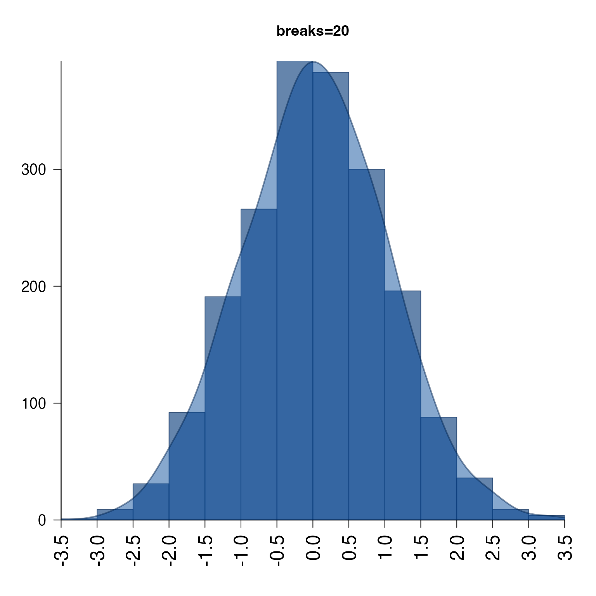

Plot distribution and histogram overlay
plotPolygonDensity(x, doHistogram = TRUE, doPolygon = TRUE, barCol = "#00337799", col = NULL, histBorder = makeColorDarker(barCol, darkFactor = 1.5), colAlphas = c(0.8, 0.6, 0.9), hueShift = -0.1, darkFactors = c(-1.3, 1, 3), polyCol = "#00449977", polyBorder = makeColorDarker(polyCol), lwd = 2, las = 2, u5.bias = 0, pretty.n = 10, bw = NULL, breaks = 100, width = NULL, densityBreaksFactor = 3, axisFunc = axis, bty = "l", cex.axis = 1.5, doPar = TRUE, heightFactor = 0.95, weightFactor = NULL, main = "Histogram distribution", xaxs = "i", yaxs = "i", log = NULL, xScale = c("default", "log10", "sqrt"), logFloorMethod = c("detect", "+1", "floor1", "none"), usePanels = TRUE, useOnePanel = FALSE, ablineV = NULL, ablineH = NULL, ablineVcol = "#44444499", ablineHcol = "#44444499", ablineVlty = "solid", ablineHlty = "solid", removeNA = TRUE, add = FALSE, ylimQuantile = 0.99, ylim = NULL, verbose = FALSE, ...)
Arguments
| x | numeric vector, or numeric matrix. |
|---|---|
| doHistogram | logical indicating whether to plot histogram bars. |
| doPolygon | logical indicating whether to plot the density polygon. |
| barCol, polyCol, polyBorder, histBorder | colors used when |
| col | color or vector of colors to apply to plot panels. |
| u5.bias, pretty.n | parameters sent to |
| bw | text bandwidth name, used in the density calculation, sent
to |
| breaks | numeric breaks sent to |
| densityBreaksFactor | numeric factor controlling the level of
detail in the density, sent to |
| log | character vector, optionally containing "x" and/or "y" to
apply the appropriate transformation. If "x" then it sets
|
| xScale | character string defining the x-axis transformation: "default" applies no transform; "log10" applies a log10 transform; "sqrt" applies a sqrt transform. |
| usePanels | logical indicating whether to separate
the density plots into panels when |
| useOnePanel | logical indicating whether to define multiple panels
on one page. Therefore |
| ablineV, ablineH | abline vertical and horizontal positions, respectively. These values are mostly helpful in multi-panel plots, since they draw consistent lines on each panel. |
| removeNA | logical indicating whether to remove NA values prior to running histogram and density calculations. Presence of NA values generally causes both functions to fail. |
| ylimQuantile | numeric value between 0 and 1, indicating the
quantile value of the density |
| ylim, xlim | numeric y-axis and x-axis ranges, respectively. When NULL, the x-axis range is determined for each plot panel. |
| verbose | logical indicating whether to print verbose output. |
Details
This function is a wrapper around graphics::hist() and
stats::density(), with enough customization to cover
most of the situations that need customization.
For example log="x" will automatically log-scale the x-axis,
keeping the histogram bars uniformly sized. Alternatively,
xScale="sqrt" will square root transform the data, and
transform the x-axis while keeping the numeric values constant.
It also takes care of scaling the density height to be reasonably similar to the histogram bar height, using the 99th quantile of the y-axis value, which helps prevent outlier peaks from dominating the y-axis range, thus obscuring interesting smaller features.
If supplied with a data matrix, this function will create a layout
with ncol(x) panels, and plot the distribution of each column
in its own panel, using categorical colors from
colorjam::rainbowJam().
By default NA values are ignored, and the distributions are the non-NA values.
Colors can be controlled using the parameter col, but can
be specifically defined for bars with barCol and the polygon
with polyCol.
See also
Other jam plot functions: adjustAxisLabelMargins,
decideMfrow, getPlotAspect,
imageByColors, imageDefault,
minorLogTicksAxis, nullPlot,
plotSmoothScatter,
shadowText, showColors,
smoothScatterJam, sqrtAxis,
usrBox
Examples
#> Warning: arguments 'col', 'border', 'main', 'ylab', '...' are not made use of#> Warning: 'x' is NULL so the result will be NULL#> Warning: arguments 'col', 'border', 'main', 'ylab', '...' are not made use of#> Warning: 'x' is NULL so the result will be NULL# log-scaled x-axis plotPolygonDensity(10^(3+rnorm(2000)), log="x", breaks=50, main="log-scaled x-axis");#> Warning: arguments 'col', 'border', 'main', 'ylab', '...' are not made use of#> ## (13:02:28) 06Feb2019: majorTicks:0.301030,1.041393,2.004321,3.000434,4.000043,5.000004,6.000000,7.000000 #> ## (13:02:28) 06Feb2019: majorLabels:1e+00,1e+01,1e+02,1e+03,1e+04,1e+05,1e+06,1e+07#> Warning: 'x' is NULL so the result will be NULL